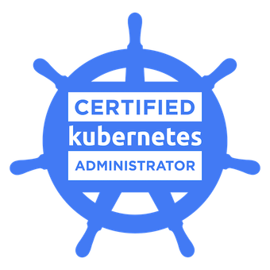

Noah Schlaupitz
QA Analyst
This project is to showcase my skills in DevOps tools and technologies. Utilizing Docker, Kubernetes, Terraform & AWS.
This project is to showcase my skills in DevOps tools and technologies. Utilizing Docker, Kubernetes, Terraform & AWS.
I'm a tech enthusiast with 2.5 years of QA experience at Bank of America and Duke Energy. I hold a Bachelor's in Management Information Systems from East Carolina University. I’m skilled in SQL, Kubernetes, Terraform, AWS, Docker, and Python, and I'm always eager to learn more.
Led the development and execution of 34 scenario tests during a billing system conversion, utilizing qTest for tracking. Collaborated with cross-functional teams to create comprehensive test plans, ensuring data quality in 95 data maps using SQL in HANA Studio. Conducted root cause analysis and worked closely with developers to resolve defects. Actively participated in Agile processes, contributing to continuous improvement
Developed detailed test plans and scripts to validate functionality and performance, aligning them with business requirements. Conducted automated regression testing on the GPX merchant services system using Tosca and performed API testing on the backend system. Managed defects with ALM and tracked business requirements and test cases in Jira. Participated in Agile ceremonies, contributing to team collaboration and iterative development.
 |
 |  |
This Project is what is currently hosting this website. It uses Amazon Web Services(AWS) to host the Elastic Kubernetes Service(EKS), and the EKS cluster deploys this site. To deploy the EKS cluster I utilized Terraform to construct the Infrastructure as Code(IaC) where I applied the code to AWS to create the EKS cluster. I used docker to create an image and push it to AWS's Elastic Container Registry where my EKS cluster used the image to deploy this webapp.